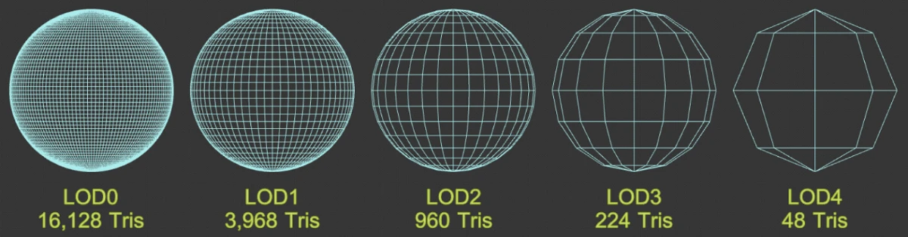
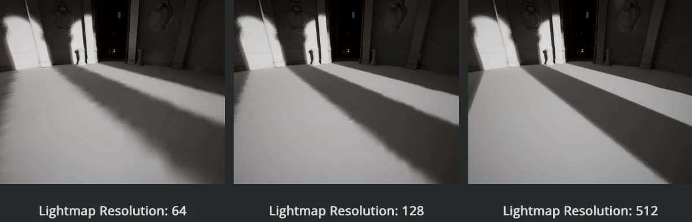
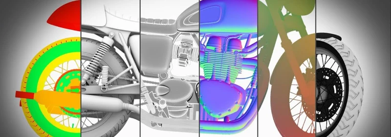
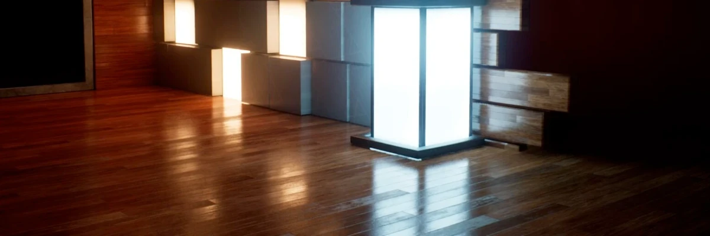
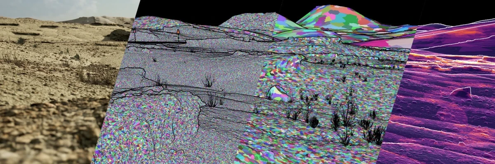
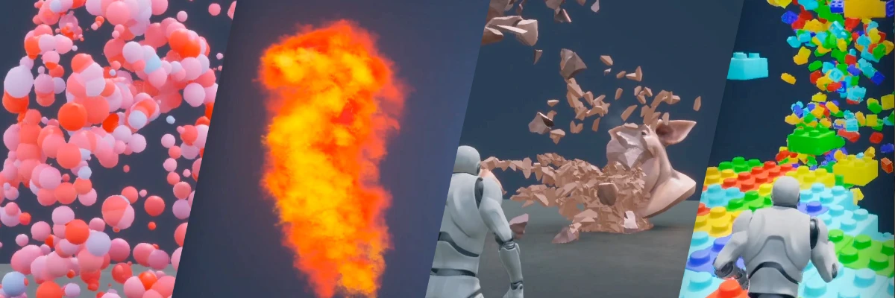

Terminology
Common Terms
- LOD - "Level of Detail". As the player camera moves further away from a model, the model will cover less and less screen-space area. As there's no point in having a very complex model taking up a small amount of pixels on screen, it's common to swap the model with LOD-models as the player moves further away from a model. LOD meshes are indexed with a zero-based system, where the regular high quality model is LOD-0 and as the LOD level number increases, the models have progressively less geometry details and fewer polygons. Thus a LOD-3 mesh will have less detail than LOD-1. 
- Lightmap - Lighting, indirect-lighting and shadows pre-computed and saved as a texture. Very efficient as the lighting computations are done only once while building the level/game instead of at runtime/real-time. Lightmaps can yield very high quality lighting but are limited by texture resolution/GPU memory and are static which means the shadows/lights are not updated when dynamic objects move around a scene. 
Unreal have systems (Indirect Lighting Cache/Volumetric Lightmaps) that allows dynamic object to sample the lighting information of the nearby lightmap which is interpolated and yields a decent approximation. This will very likely be the approach we will use for the project. - Baking - The process of saving information related to a 3D mesh into a texture file (bitmap). Most of the time this process involves projecting/transferring information from another mesh. 
Unreal Engine 5
- Actor - Any object that can be placed into a level (such as a Camer or Static Mesh) and support 3D transformations (such as rotation, scaling and translation).
- Component - A piece of functionality that can be added to an Actor. (e.g. an Audio Component will let an Actor play sounds). Components must be attached to an Actor and can't be exist or be placed into a level by themselves.
- Blueprint -
- Brush - An actor that describes a certain type of 3D object shapes. Brushes are useful for creating simple block-outs of levels (though they are not recommended for final designs). Brushes also known as Binary Space Partitions or BSP brushes.
- Volumes - Bounded 3D spaces that have different uses depending on the effects attached to them. Examples:
- Blocking Volumes are invisible and used to prevent Actors from passing through them.
- Trigger Volumes cause events to trigger when an Actor enters/exits them.
- Post Processing Volumes apply various visual effects while a camera is within its bounds.
- Levels - (also called maps) are scenes that contains everything that can be seen or interacted with. UE5 saves each level as a separate
.umapfile. - World - A container for all levels that handles common settings, content streaming/loading and creation of dynamic actors.
- Static Mesh - 3D models created in external applications and imported into Unreal. The basic unit used to create geometry for levels and makes up the vast majority of a level.
- Proxy geometry - A way to combine multiple Static Meshes and their materials/textures into a single Static Mesh with one single material/texture set with reduced polygon count. They can be used as to substitute the original meshes in scenarios where reduced quality is an acceptable tradeoff, such as a using the proxy in shadow calculations to improve runtime performance at the cost of memory and asset processing.
- HLOD - "Hierarchical Level of Detail", Unreals LOD system that combines usage of LOD and Proxy meshes.
Unreal systems and tools
Unreal has a few systems that have been given non-descriptive/esoteric names. A couple of the relevant ones are described below.
- Lightmass - Lightmap baker that offline-computes lighting (including indirectlighting/global illumination and ambient occlusion) and saves the result as a a lightmap/shadowmap texture. It's a slow process, but can yield high quality (but static) lighting.
- Lumen - A realtime reflections and GI (global illumination) lighting solution. Significantly more expensive performance-wise and less accurate than lightmass, but has the benefit of supporting GI in dynamic scenes. 
- Nanite - A dynamic level-of-detail system that allows scenes to contain extremely high-polygon count objects which are optimized and streamed behind the scenes, dynamically adjusting the detail of the objects depending on the distance of the player camera. It has a few drawbacks and limitation and is mostly suitable for static environment pieces with a lot of intricate details, such as cliffs, rocks or statues. It's not really applicable to our project. 
- Niagara - Particle and VFX system. Allows for the creation of complex particle systems and visual effects using node-based components. 
There's a few more systems that you might encounter but which we are unlikely to need or use in this project:
- Chaos - Destruction physics for large-scale real time destruction.
- APEX - System that can be used to create destructible meshes and cloth simulations.
- UMG - UI Editor for creating UI/HUD elements, menus or graphical interfaces.